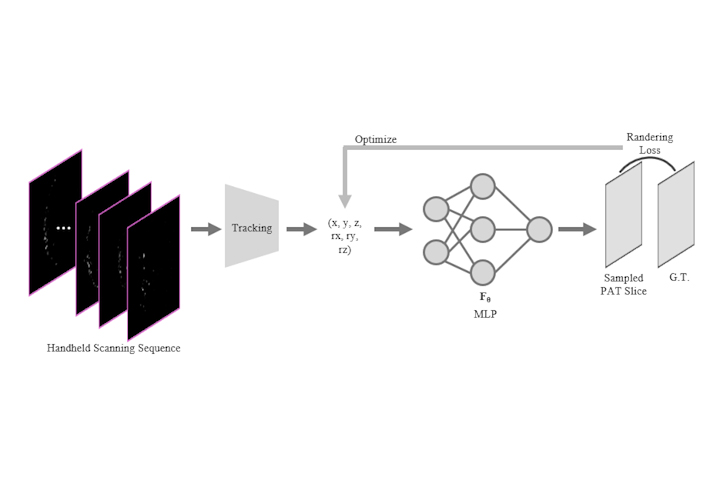
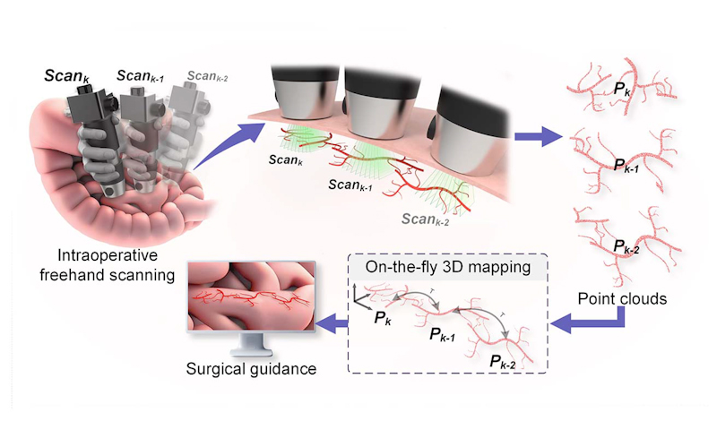

I'm a PhD student under the supervision of Prof. Ren Hongliang,
at the Department of Electronic Engineering, The Chinese University of Hong Kong (CUHK).
My current research interests focus on localization and mapping / reconstruction technologies for mobile robots, and their applications in medical imaging.
In the future, I also plan to explore integrating with embodied intelligence.
Tracks the 6 degree-of-freedom handheld scanner poses in real-time via high-speed photoacoustic imaging, and constructs panoramic 3D vascular maps without field-of-view constraints, offering on-site guidance.
Would help improve surgical perception.
Neural implicit 3D reconstruction of tomography
After acquiring a set of 2D tomography sequence of handheld scan along arbitrary trajectory,
tracking the 3D space position without sensor,
and reconstruct a high-resolution 3D model via neural implicit representation.


Freehand 3D Panoramic Angiography SLAM
Tracks the 6 degree-of-freedom handheld scanner poses in real-time via high-speed photoacoustic imaging,
and constructs panoramic 3D vascular maps without field-of-view constraints, offering on-site guidance.
Would help improve surgical perception.
{kind=link}